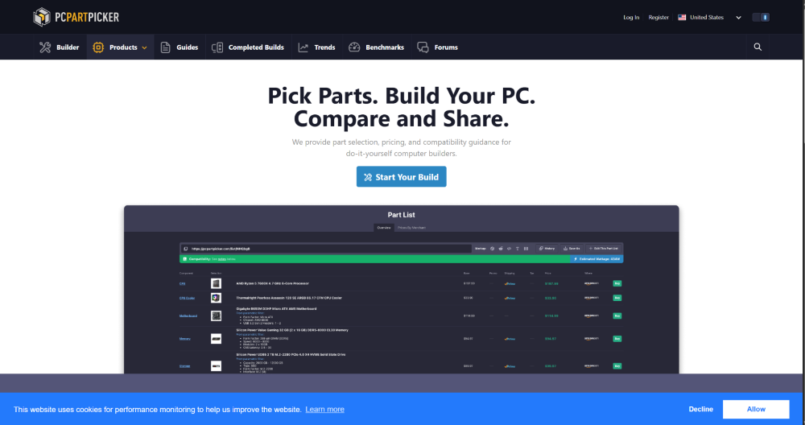
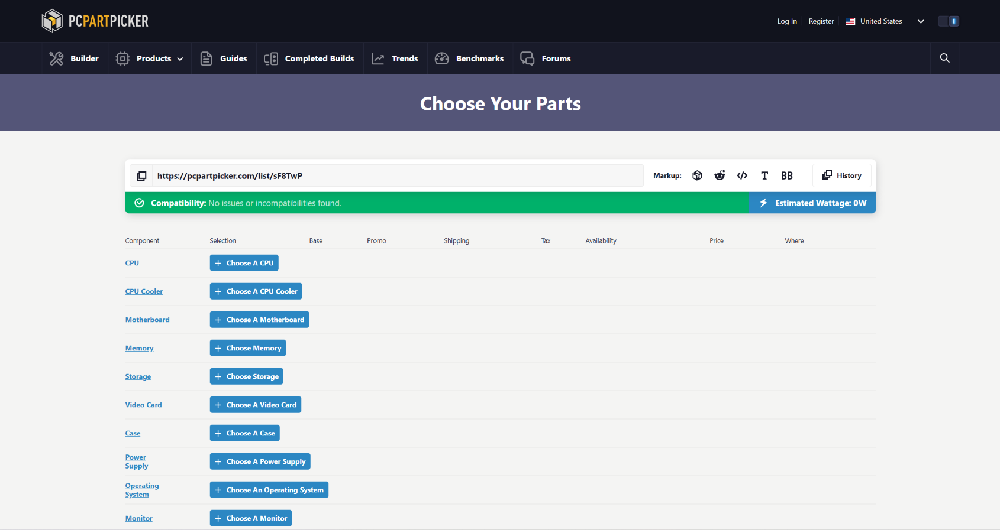
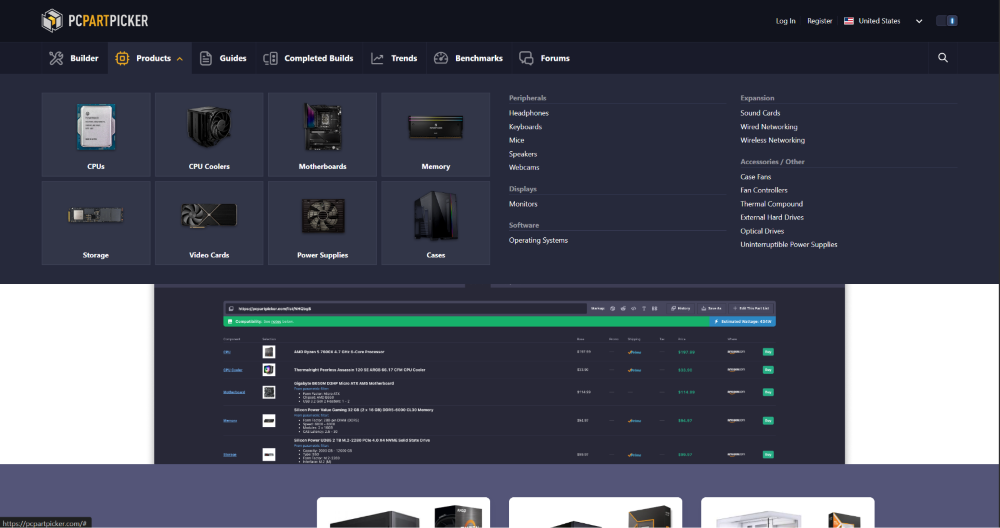
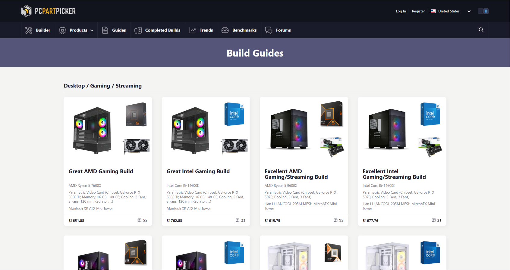
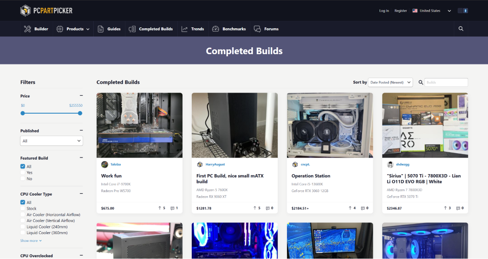
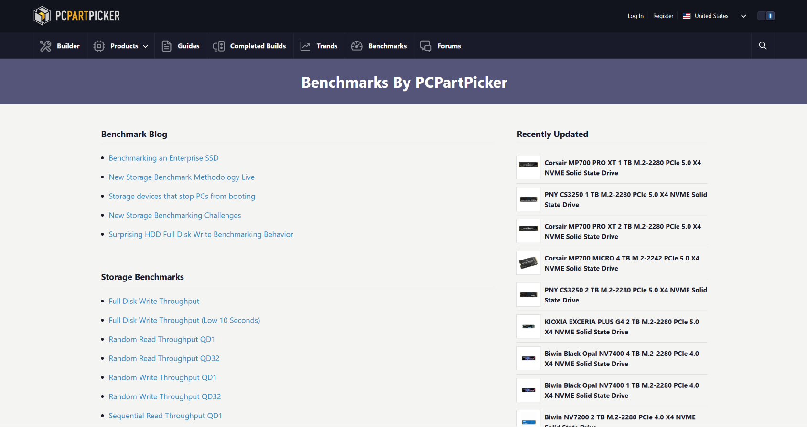
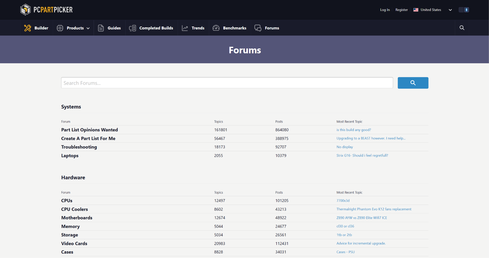

History of PC building
1950s–1960s: The Beginning The earliest computers were large, expensive machines built for scientific research and military use. Games such as Nimrod, Tennis for Two, and Spacewar! demonstrated that computers could also provide interactive entertainment, laying the foundation for video gaming.
1970s: Home Computers Arrive The invention of the microprocessor made personal computers possible. Systems like the Apple II, Commodore PET, and TRS-80 introduced gaming to homes. Later, the Commodore 64 became one of the best-selling computers ever, offering improved graphics, sound, and a massive game library.
1980s: The Rise of the IBM PC The launch of the IBM PC established the standard for modern personal computers. Graphics improved from CGA to VGA, while sound cards such as the Sound Blaster enhanced the gaming experience. Developers created increasingly advanced games, making PCs a serious gaming platform.
1990s: The 3D Revolution The 1990s transformed PC gaming with the introduction of 3D graphics and internet connectivity. Games like Wolfenstein 3D, Doom, and Quake popularized first-person shooters and multiplayer gaming. Graphics cards such as the 3dfx Voodoo and NVIDIA GeForce 256 greatly improved visual performance and helped establish the modern GPU.
2000s: Online Gaming Boom Broadband internet changed how people played games. Online titles such as World of Warcraft attracted millions of players, while platforms like Steam made downloading games more convenient than buying physical copies. Multi-core processors, larger storage drives, and better cooling systems also became common in gaming PCs.
Modern Gaming PCs Today's gaming PCs feature powerful multi-core CPUs, high-performance GPUs, SSDs, advanced cooling solutions, and AI-powered technologies. These systems support realistic graphics, high frame rates, esports, game streaming, and content creation, making them more versatile than ever.
PC parts Explained
- CPU: Processes instructions and runs programs
- GPU: Renders graphics and improves gaming performance
- Motherboard: Connects all components together
- RAM: Stores temporary data for fast access
- PSU(power supply unit): Supplies power to all components
- SSD/HDD(storage): Stores the operating system, games and files
- CPU cooler: Keeps CPU cool
- PC case: Protects components and provides airflow
- Case Fans: Improves cooling and airflow
- Network Adapter: Connects the PC to the internet
- Operating System: Runs the computer and applications
How to Build your own PC
All the parts of a PC: CPU, GPU, Motherboard , RAM , SSD , PSU
Step 1: (Prep) Gather all your PC components and tools and work on a clean, static-free surface.
Step 2: (CPU) Carefully place the CPU into the motherboard socket, ensuring the alignment markers match
Step 3: (RAM) Insert the RAM sticks into the correct motherboard slots until they click into place.
Step 4: (SSD) Attach the SSD/other storage device to the motherboard or drivebay.
Step 5: (CPU cooler) Apply thermal paste if needed, then secure the CPU cooler to keep the processor at a safe temperature.
Step 6: (Motherboard) Place the motherboard into the PC case and secure it using the provided screws.
Step 7: (PSU) Fit the PSU into the case and connect the required power cables
Step 8: (GPU) Insert the GPU into the PCIe slot on the motherboard and secure it to the case
Step 9: (Connect all cables) Connect the power cables, front panel connectors , storage cables, and case fans according to the motherboard manual.
Step 10: (Power On and Install OS) Turn on PC to ensure everything works correctly , then install an operating system(OS) such as windows and update the neccessary drivers
Tips & Tricks
PC part pickerThe best way to learn how to build a PC would be having something that can guide you with the basics first before you continue trying to build a PC by yourself

Builder:

This is the builder page where you can source/reference for the parts that you want , the price and the compatibility of the parts for your own PC
Products:

These are where all the products for different parts of the PC can be found , where all of its details is given to us
Guides:

These are guides to help beginners to build their own PC , with reference
Completed Builds:

These are completed builds by the community , where they are able to post it on PC part picker to show their own build, and maybe get comments about it.
Trends:
The trends section shows us the trends of prices of different parts of the PC and for you to compare prices
Benchmark:

The benchmark section shows tests that the people that made the websites has run to see how good some parts are compared to others
Forum:

Forum is where the community have discussions about PC building and parts of the PC
Clean the PC!
Rules: Try and clean the dusts that are found in your PC! The cleaner the PC the better!Try to get a score of 20 to win